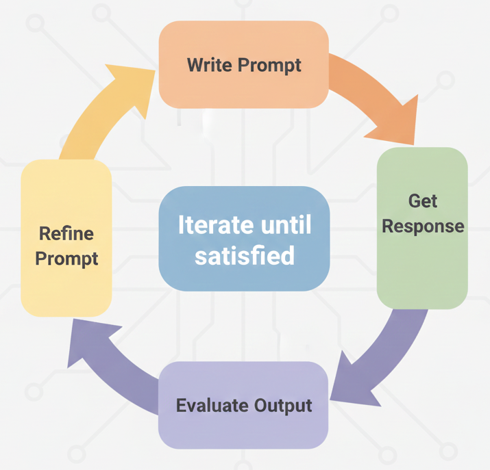
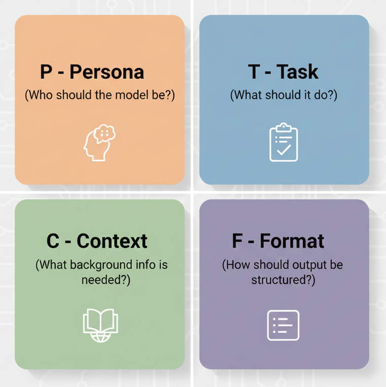
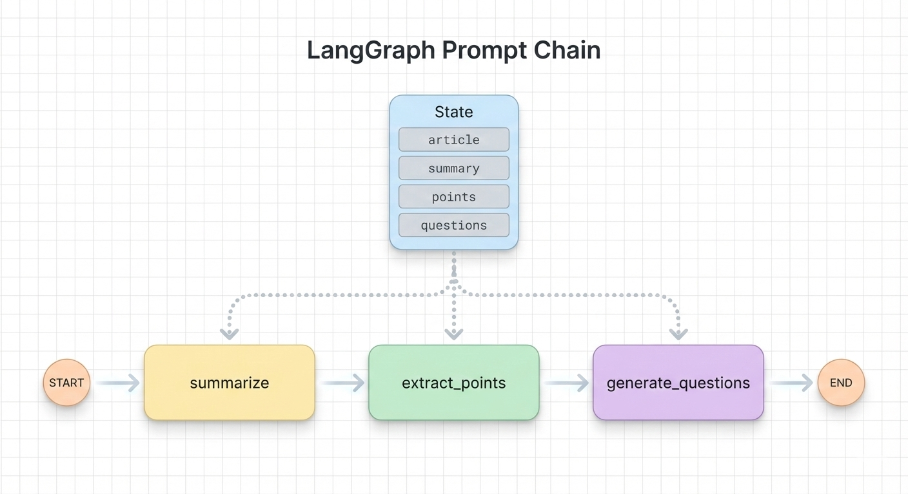

2026-01-22
The same model can give wildly different outputs based on how you ask.
Vague prompt: > “Tell me about climate change”
Better prompt: > “Summarize the three main causes of climate change in 2-3 sentences each, suitable for a high school science class”
Small changes in wording → big changes in output quality
Be explicit about what you want
Don’t assume the model will infer your intentions—state them directly.
❌ Vague: > “Write something about Python”
✅ Specific: > “Write a 100-word introduction to Python for programmers who know Java, highlighting the key syntax differences”
Include:
Tell the model exactly how to structure its response:
“List the top 5 Python web frameworks. For each one, provide:
- Name
- One-sentence description
- Best use case
Format as a markdown table.”
Common formats: Bullet points, numbered lists, Tables, JSON, specific section headings
Give the model a perspective to adopt:
“You are an experienced Python developer reviewing code written by a beginner. Review this code and provide constructive feedback focusing on readability and best practices.”
Useful personas:
Show the model what you want with examples:
“Convert these informal phrases to formal business language:
Informal: ‘Hey, can you send that over?’ Formal: ‘Could you please forward that document at your earliest convenience?’
Informal: ‘That’s not gonna work’ Formal: ‘Unfortunately, that approach may not be feasible’
Informal: ‘Let’s grab coffee and hash this out’ Formal: [model completes]”
2-3 examples usually suffice.
Ask the model to show its reasoning:
“A store has 45 apples. They sell 12 in the morning and receive a shipment of 30 more. How many apples do they have now? Think through this step by step.”
When to use:
With “think step by step” (ChatGPT 5.2):
Let’s do it step by step:
- Start with 45 apples
- They sell 12 in the morning: \(45-12=33\).
- They receive 30 more: \(33 + 30 = 63\).
So they have 63 apples now.
The reasoning steps help catch errors and make the output verifiable.
Prompting is rarely one-and-done:

When using ChatGPT, Claude, Gemini chat:
The conversation history is your friend—build on it.
In chat interfaces, you iterate conversationally.
In API applications, you need to:
A reliable structure for API prompts:

prompt = """
**Persona:** You are a senior software engineer conducting code review.
**Task:** Review the following Python function for bugs, style issues,
and potential improvements.
**Context:** This code is from a beginner learning Python. Be constructive
and educational in your feedback.
**Format:** Provide feedback as a numbered list. For each issue, explain
the problem and suggest a fix.
**Code to review:**
{code}
"""
# Usage: prompt.format(code=user_code)System instructions set persistent context for all messages.
LangChain uses SystemMessage in the message list:
from langchain_google_genai import ChatGoogleGenerativeAI
from langchain_core.messages import SystemMessage, HumanMessage
llm = ChatGoogleGenerativeAI(model="gemini-3-flash-preview")
messages = [
SystemMessage(content="You are a helpful coding assistant..."),
HumanMessage(content=state["prompt"])
]
response = llm.invoke(messages)The system message persists across the conversation.
For programmatic use, request structured formats:
prompt = """Extract the following from this product review:
- sentiment: positive, negative, or neutral
- key_points: list of main points (max 3)
- rating_guess: estimated star rating (1-5)
Respond in valid JSON only, no other text.
Review: {review_text}"""
# Usage: prompt.format(review_text=user_review)LangChain provides with_structured_output() for guaranteed structure.
Define your output schema with Pydantic, then use with_structured_output():
from pydantic import BaseModel, Field
from langchain_google_genai import ChatGoogleGenerativeAI
class ReviewAnalysis(BaseModel):
"""Analysis of a product review."""
sentiment: str = Field(description="positive, negative, or neutral")
key_points: list[str] = Field(description="Main points (max 3)")
rating_guess: int = Field(description="Estimated star rating 1-5")
llm = ChatGoogleGenerativeAI(model="gemini-3-flash-preview")
structured_llm = llm.with_structured_output(ReviewAnalysis)
result = structured_llm.invoke("This product is amazing! Great quality.")
print(result.sentiment) # "positive"Returns a Pydantic object—no JSON parsing needed!
Temperature controls randomness (0.0 to 2.0).
Start at 1.0 (default), then adjust:
| Direction | Effect | When to use |
|---|---|---|
| Lower (toward 0) | More deterministic | Code, facts, structured data |
| Higher (toward 2) | More creative | Brainstorming, writing |
Break complex tasks into steps. Define state and node functions:
from langchain_google_genai import ChatGoogleGenerativeAI
from typing_extensions import TypedDict
llm = ChatGoogleGenerativeAI(model="gemini-3-flash-preview")
class State(TypedDict):
article: str
summary: str
points: str
questions: str
def summarize(state: State) -> dict:
response = llm.invoke(f"Summarize this article: {state['article']}")
return {"summary": get_text(response)}
def extract_points(state: State) -> dict:
response = llm.invoke(f"List 3 key points from: {state['summary']}")
return {"points": get_text(response)}
def generate_questions(state: State) -> dict:
response = llm.invoke(f"Create quiz questions about: {state['points']}")
return {"questions": get_text(response)}
graph = StateGraph(State)
graph.add_node("summarize", summarize)
graph.add_node("extract_points", extract_points)
graph.add_node("generate_questions", generate_questions)
graph.add_edge(START, "summarize")
graph.add_edge("summarize", "extract_points")
graph.add_edge("extract_points", "generate_questions")
graph.add_edge("generate_questions", END)
app = graph.compile()Each step is focused → better results than one giant prompt.
Common prompting mistakes
Older advice emphasized lengthy, detailed prompts.
Modern models (Gemini 3, GPT-5, Claude 4) often respond better to:
Test both approaches — sometimes simple wins.
When outputs aren’t what you expect: